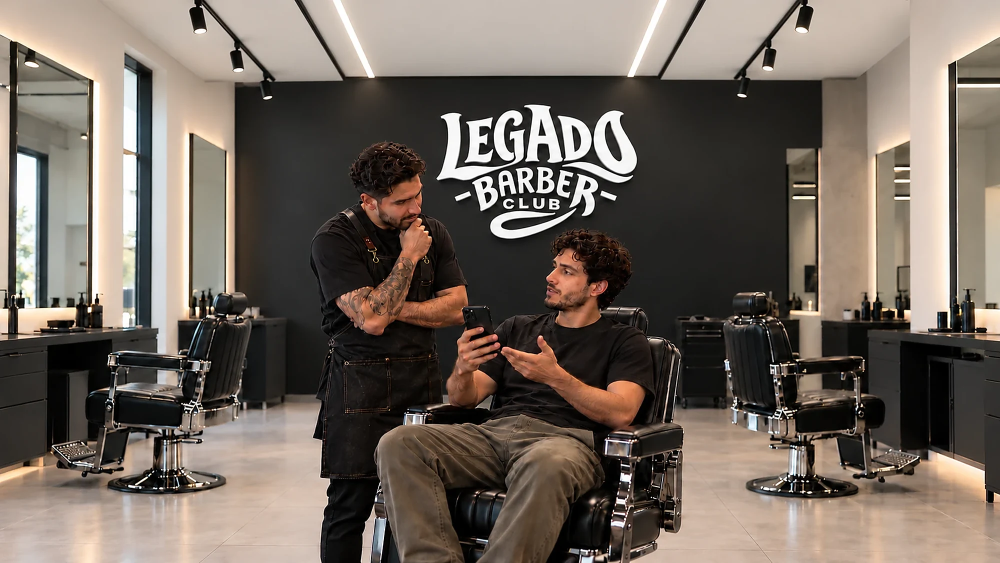

Antes: querés un cambio, pero te da miedo equivocarte
El cliente quiere un cambio de imagen, pero teme elegir un corte que no le favorezca o que sea difícil de mantener en su día a día.
Tu tipo de rostro, tu cabello y hasta el tiempo que dedicás a peinarte importan. Por eso, antes de cortar, te escuchamos, analizamos qué te puede favorecer y te asesoramos.

Diego llegó a Legado Barber Club con la foto de un corte que le gustaba, pero con dudas sobre si le quedaría bien. Otras veces había pedido un estilo que después no podía mantener en casa.
Antes de empezar, el barbero le preguntó qué buscaba y cuánto tiempo dedicaba a peinarse. Juntos adaptaron la referencia a su rostro, su cabello y su rutina. Al terminar, le enseñó cómo peinarlo en pocos pasos.
A la mañana siguiente, Diego pudo acomodarse el cabello por su cuenta y salir sintiéndose seguro con su nuevo estilo.
 1 La duda
1 La duda 2 ¿Me quedará bien?
2 ¿Me quedará bien? 3 Compartir la idea
3 Compartir la idea 4 Escuchar primero
4 Escuchar primero 5 Adaptar su estilo
5 Adaptar su estilo 6 Aprender a peinarse
6 Aprender a peinarse 7 Listo en pocos pasos
7 Listo en pocos pasos 8 Elegante y seguro
8 Elegante y seguroDeslizá para ver la historia

El cliente quiere un cambio de imagen, pero teme elegir un corte que no le favorezca o que sea difícil de mantener en su día a día.

Gracias a la escucha y al asesoramiento personalizado, el cliente pasa de la incertidumbre a la confianza. Encuentra un corte que se adapta a sus características y aprende a mantenerlo en casa.
Todos los servicios incluyen una charla previa y te enseñamos a peinarte en casa.
Si no sabés qué hacerte. Analizamos rostro, pelo y rutina y decidimos juntos.
ReservarTijera o máquina, con terminación a navaja y lavado.
ReservarToalla caliente, navaja y aceite. Forma pensada para tu cara.
ReservarEl servicio completo, con el mismo barbero de principio a fin.
ReservarEspuma caliente, navaja y bálsamo. Sin apuro.
ReservarCada corte se adapta a quien lo lleva.


Sí, si hay un sillón libre. Con turno te asegurás el horario y el barbero que prefieras.
El corte con asesoramiento. Dura un poco más porque antes de empezar lo definimos juntos.
Sí, hasta 2 horas antes. Respondé el mensaje de confirmación que te mandamos por WhatsApp.
En el local, con efectivo, débito, crédito o transferencia.
| Lunes | 10:00 – 20:00 |
|---|---|
| Martes | 10:00 – 20:00 |
| Miércoles | 10:00 – 20:00 |
| Jueves | 10:00 – 20:00 |
| Viernes | 10:00 – 20:00 |
| Sábado | 10:00 – 20:00 |
| Domingo | Cerrado |